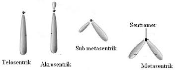
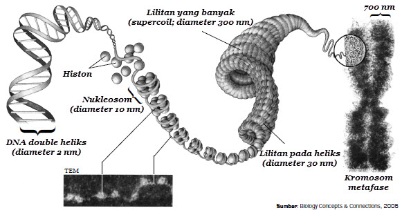

#
Kromosom
#
Definisi
Di dalam inti sel terdapat benang benang halus yang terdiri dari DNA dan protein dan bisa diwarnai dengan pewarna tertentu. Pada saat sel tersebut ingin membelah, benang-benang tersebut memendek & menebal menjadi kromosom.
Pasangan kromosom setiap spesies memiliki pola tampilan tertentu, hal ini dinamakan kariotipe. Kariotipe setiap spesies unik. Kromosom dalam sel selalu berpasangan, 1 pasangan disebut homolog jika memiliki bentuk, ukuran, dan komposisi sama atau mirip. Kumpulan / set kromosom homolog dalam sebuah sel bernama genome.
Untuk melihat kromosom dengan mudah, biasanya diambil dari kelenjar air ludah lalat buah, karena kromosom lalat buah jauh lebih besar daripada kromosom organisme lain. Kromosom ini dinamakan kromosom raksasa. Kromosom lalat buah hanya ada 4 pasang, 3 pasang autosom dan 1 pasang gonosom
#
Jenis
Berdasarkan fungsinya, kromosom dapat dibedakan menjadi 2 jenis:
Kromosom tubuh (autosom / A) Kromosom yang mengendalikan sifat tubuh, seperti warna mata, warna kulit, tinggi badan, dll. Jumlah autosom pada sebagian besar organisme sama
Kromosom seks (gonosom) Kromosom yang menentukan jenis kelamin, contohnya kromosom X dan Y. X berbentuk lurus sedangkan Y sedikit bengkok pada ujungnya
#
Bentuk-bentuk kromosom
#
Kromosom dalam manusia
Jumlah kromosom dalam sel manusia ada 22 pasang autosom dan 1 pasang gonosom (22 *2 + 1 *2 = 46 total sel kromosom dalam sel). Kromosom seks XX menandai wanita, sementara XY menandai laki-laki.
Di sel kelamin mamalia betina (termasuk manusia), terdapat gonosom XX, tetapi salah satu kromosom X tidak aktif sama sekali. Kromosom tidak aktif ini dinamakan barr body. Maka, sel kelamin wanita hanya memiliki 23 kromosom, 11 pasang autosom dan \frac{1}{2} pasang gonosom (kromosom X). Sel kelamin pria juga memiliki 23 kromosom, 11 pasang autosom, dan \frac{1}{2} gonosom, tetapi bisa X atau Y.
#
Struktur Kromosom
Bentuk kromosom berbeda antar spesies, biasanya \pm 0.5\mu M dan diameter 0.2-20\mu M. Biasanya kromosom tumbuhan lebih besar daripada hewan. Setiap kromosom memiliki jumlah sentromer yang bervariasi.
Dalam proses pewarnaan, terdapat 2 bagian berbeda:
- Sentromer, bulatan kecil berwarna terang karena menyerap sedikit warna
- Kromatid, lengan berwarna gelap karena menyerap banyak warna
Sentromer merupakan kromosom yang mengecil dan menyerupai bulatan kecil di tengah-tengah kromosom. Di sentromer terdapat kinetokor yang menjadi tempat melekatnya benang-benang spindel saat pembelahan sel.
Kromatid merupakan badan kromosom yang mengandung filamen tipis, kromonema. Kromonema diselubungi oleh matriks yang dibungkus oleh membran. Kromonema terdiri dari bagian-bagian kecil yang bergranula besar dan kecil. Granula besar disebut kromomer / lokus dan granula kecil disebut kromiol. Kromomer menyimpat materi genetik dalam bentuk DNA dan protein histon.
Berdasarkan jumlah sentromer, kromosom dapat dibedakan menjadi 4 jenis:
- Asentrik, 0 sentromer
- Monosentrik, 1 sentromer
- Disentrik, 2 sentromer
- Polisentrik, 2+ sentromer
Berdasarkan letak sentromer, kromosom dapat dibedakan menjadi 4 jenis:
- Metasentrik, sentromer di tengah sehingga kromosom seperti huruf V
- Submetasentrik, sentromer tidak di tengah, sehingga kromosom seperti huruf V dengan satu lengan panjang
- Akrosentrik, sentromer terletak di antara kromatid, sehingga kromosom seperti huruf L
- Telosentrik, sentromer terletak di ujung kromatid, sehingga kromosom seperti huruf I
Pada ujung kromosom terdapat telomer untuk mencegah pelekatan dengan kromosom lain dan menjaga agar DNA di dalam tidak mudah terurai. Ujung kromosom memiliki sturktur yang terbentuk karena kontriksi sekunder dan dinamai satelit.
Pemintalan dan pengemasan DNA dalam kromosom terdapat di tahap profase. DNA ini berbentuk double heliks dan membentuk pintalan pada protein histon. Pintalan ini disebut nukleosom dan merupakan unit dasar kromosom. Nukleosom tersusun padat dan terpilin membentuk lipatan solenoida. Lipatan-lipatan ini membentuk benang kromatin. Kromatin akan memadat dan membentuk kromatid. Dua kromatid yang memadat akan membentuk 1 kromosom.

#
Jumlah Kromosom
Setiap spesies memiliki jumlah kromosom yang berbeda, contohnya ikan mas 94 kromosom, kuda 64, dan manusia 46. Berikut adalah tabel jumlah kromosom
#
Gen & Alel
#
Definisi Gen
Gen adalah unit terkecil materi genetik yang mengendalikan sifat hereditas suatu organisme. Gen terdiri dari DNA yang terpintal oleh protein histon dan terdapat di dalam lokus (kromomer) pada kromonema. Setiap kromosom mengandung ratusan lokus, sehingga setiap kromosom mengandung ribuan gen. Setiap sel manusia mengandung 46 kromosom, sehingga diperkirakan setiap sel mengandung 26,000-40,000 gen
Satu gen mengendalikan satu sifat hereditas sehingga satu individu memiliki ribuan sifat. Setiap gen terdapat dalam lokus di kromosom nomer tertentu, sehingga dapat diketahui letak gen-gen dengan sifat tertentu. Pasangan kromosom yang homolog memiliki lokus yang mengandung gen-gen yang mengatur sifat-sifat yang sama.
#
Definisi Alel
Alel adalah pasangan gen yang terdapat pada kromosom homolog yang menunjukan sifat alternatif sesamanya. Contoh dari hal ini adalah biji bulat dilambangkan dengan B, sementara biji keriput dilambangkan dengan b. Pasangan gen dalam kromosom homolog suatu individu disebut genotipe. Pasangan alel dari kromosom homolog ada 3 jenis, homozigot dominan, heterozigot, dan homozigot resesif
Gen dominan dilambangkan dengan huruf kapital (A, B, C, D, dll.) sementara gen resesif dilambangkan dengan huruf kecil (a, b, c, d, dll.). Ekspresi gen dominan akan menutupi ekspresi gen resesif. Ekspresi yang memengaruhi penampakan sifat disebut fenotipe.
Contoh, B adalah fenotipe biji bulat dan b adalah fenotipe biji keriput. Pasangan dominan BB akan menampilkan biji bulat Pasangan heterozigot Bb / bB akan menampilkan biji bulat pasangan resesif bb akan menampilkan biji keriput
#
Gen aktif dan pasif
Pada setiap sel terdapat gen yang didapat oleh sel lain. Artinya, gen usus terdapat di sel kulit, gen jantung terdapat di sel mata, dll. Tetapi, gen yang aktif di suatu organ bisa menjadi pasif di organ lain. Contohnya adalah gen yang menumbuhkan rambut aktif di sel kulit, tetapi pasif di sel mata. Keaktifan suatu gen dipengaruhi oleh beberapa faktor seperti tempat keberadaan gen, jenis kelamin, kelainan, dan umur.